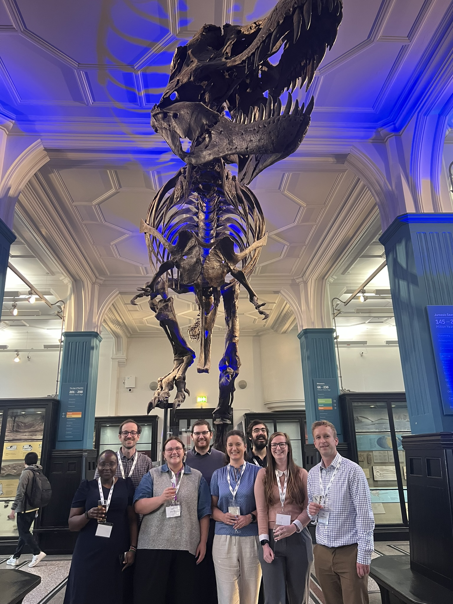

Research Dissemination
Here you will find useful information about publishing your findings in peer-reviewed journals, which is an important part of undertaking research. There is also information about attending conferences, which are a great way of disseminating your research and developing your networks with researchers at other institutions.
Research integrity Reminder
Please be aware of predatory journals and fake conferences, which may target researchers through unsolicited emails or invitations. These organisations often lack appropriate peer review, editorial oversight, or academic credibility. If you are unsure whether a journal, conference, or training opportunity is legitimate, it is always best to discuss it with your supervisor or a senior colleague before submitting work or making any payments.
Publishing research articles
There a few important things to consider when preparing to submit an article to a journal.
Choosing a Journal
Choosing which journal to submit your manuscript too can be time-consuming, as there are a number of things to think about. It is important to decide this early on when preparing your article, as journals can vary considerably in the accepted format (e.g. word count, number of tables and figures, abstract structure etc.) and it can be helpful to tailor your writing to the intended audience.
All journals should have their aims and scope stated clearly on their website. Some journals are more focussed on methodology research (e.g. Statistics in Medicine or Diagnostic and Prognostic Research) whilst others are for more clinical or applied research (e.g. International Journal of Clinical Epi, or the British Medical Journal). The JANE tool can be helpful for suggesting appropriate journals, based on either the abstract or keywords. It can also be useful to look at where similar or relevant studies have been published previously, and discuss options with your supervisors or project team.
All journals have a rating, called an impact factor, which is based on the average number of citations published articles receive. Whilst some researchers may target journals with a higher impact factor, we recommend you do not base your decision solely on this. Higher impact journals often have long wait times for initial editorial decisions and the peer-review process, and a high impact factor is not necessarily an indicator of higher quality research.
Once you have decided on which journal you are going to submit to, make sure you read all the information they provide to authors and follow all the instructions they give you. If you do not, then it may cause delays in the submission process if you are asked to correct anything.
Reporting Guidelines
Following reporting guidelines improves the transparency and accuracy of research. There are different guidelines to follow depending on the type of study you are doing. The Enhancing the QUAlity and Transparency Of health Research (EQUATOR) network website lists all the guidelines.
Here are a few that are most relevant to this group:
The Transparent Reporting of a multivariable prediction model for Individual Prognosis Or Diagnosis (TRIPOD+AI) statement should be followed for any study developing or evaluating a prediction model. The checklist and explanation of how it was developed can be found here.
The The Strengthening the Reporting of Observational Studies in Epidemiology (STROBE) guidelines should be used for any observational study. More info is here.
The Preferred Reporting Items for Systematic reviews and Meta-Analyses (PRISMA) should be used for reporting systematic reviews. There is an extension specifically for scoping reviews, which can be found here.
The Transparent Reporting of Studies Emulating a Target Trial (TARGET) guidelines have recently been published here.
Academic Writing Support
If you would like some help with your writing then the academic phrasebank is a great resource. It provides suggestions of phrases and sentence structure for each section of an article or dissertation, for example, how to write critically or report results.
For PGR students the university offers training courses for academic writing, which can be found in the training catalogue. The library also offers a few different workshops for writing and referencing, as well as one-to-one consulations.
Open Access
In line with the University’s Position Statement on Open Research and Publications Policy (see the Office for Open Research website), researchers are required to publish articles as Open Access. This means that they are available and distributed without any access fees.
The University has open access agreements with many journals which means articles can be published Open Access at no cost to the author. If you are submitting an article to a journal not covered by an Open Access agreement then there are funds available to cover costs.
There is more information here, about how to access funding, details of Open Access agreements, and how to deposit an accepted manuscript in the Open Access Gateway.
Preprints
Some researchers choose to make a pre-print of their articles available before it has been published in a peer-reviewed journal. This can be useful for getting research out into the world promptly, as the peer-review process can take a long time. However, there are some drawbacks so it is advisable to speak to your supervisors or project team if this is something you are considering. medRxivis the most common platform to publish pre-prints, or the Open Science Framework (OSF). Some journals do have the option of making a pre-print available through them when you submit your manuscript for peer-review.
ORCID and Research Explorer
All staff and PGR students are expected to set up a Pure profile which contains details of all your qualifications, research interests and research outputs. This will then generate a page for you on the Research Explorer website. For help setting up your PURE profile please see here.
You are also required to set up an Open Research and Contributor ID (ORCID) which is a unique identifier that you can use to keep a record of your research activities throughout your career. For more details, including how to claim your ID, see here.
Conferences
Popular conferences
Here are some conferences that members of the group frequently attend. Attending a conference for the first time can be daunting, if you are unsure about possibly going then please speak to the group - it’s likely other members are planning to attend!
Young Statistician’s Meeting - YSM is a great conference specifically for ECRs. It’s a bit more relaxed than some of the bigger conferences and there are options to present your research through posters or short talks. The 2026 conference is being hosted by the University of Cambridge, more info is here.
Royal Statistical Society International conference - usually held in the UK in September every year. The programme usually contains a lot of medical statistics content, including prediction modelling. There are numerous ways to present your work, through posters or talks, and good networking opportunities! Details of the 2026 conference which is being held in Bournemouth can be found here.
International Society for Clinical Biostatistics conference - ISCB is an annual conference usually held in Europe in late summer (August/September). The 2026 conference will be in Freiburg, Germany. Details are here.
Methods for Evaluating Models, Tests & Biomarkers - MEMTAB is usually held every 2 years, in Europe. The next meeting will be in July 2027, in Utrecht. Details are not available yet, but will probably be posted here.

Group members at the CHAI Fest conference held at the Manchester Museum in June 2026. From left to right: Miriam, Alex, Molly, Jamie, Siân, Pedro, Steph and Matt.
Conference funding and travel
Most PGR students will have funding allocated for training and research dissemination. The amount will vary depending on the funder, please speak to your supervisor if you are unsure what your budget is and are unsure how best to use it. For research staff funds may be available through the project grant, speak to your line manager or project PI if you would like to access these.
The Doctoral Academy has a conference support fund for PGR students, more information can be found here.
For post-doctoral research staff the ResDev team also have a dissemination fund. Details of that are here.
Travel & Conference Booking
The University of Manchester uses the Key Travel platform as its designated travel management system for booking business flights, rail travel, and accommodation. Bookings require prior departmental approval and should not be paid out of pocket unless explicitly authorized. Please contact your supervisor in the first instance on who should be approached.
If you need any assistance with booking conferences or travel, please speak to the divisional operations team who can be contacted at i.pops@manchester.ac.uk. You will need the project codes for the team to charge bookings to, ask your line manager or supervisor for these codes.